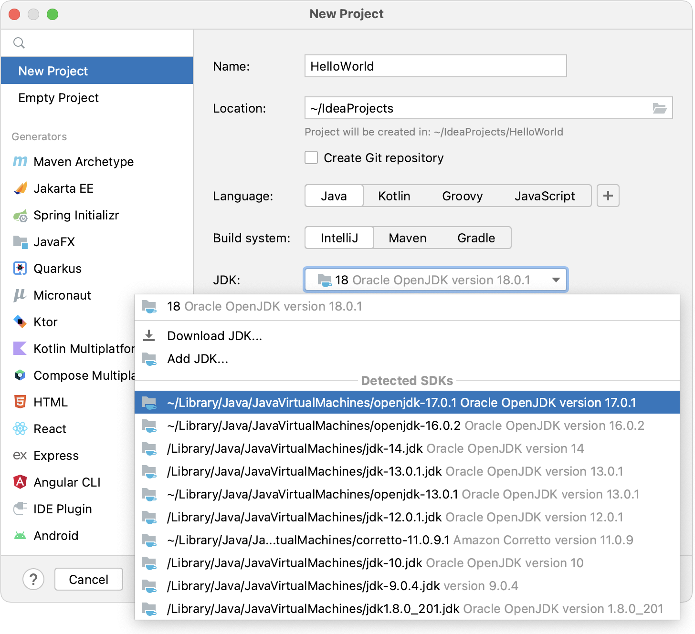
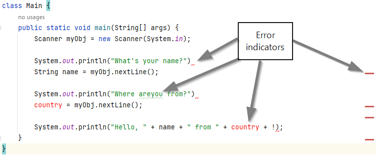

Tutorial: Inspect your Java code to find and fix errors
This tutorial describes how to find and fix errors in your Java application with a help of Inspect Code. This feature allows you to get a list of errors of your program, export the list, quickly fix the issues, and many more.
You can also watch a tutorial video about the feature at the end of the page.
What is an error?
In our case, an error is any difference between an expected and actual behavior of your code. The expected behavior may come from requirements for the program, industry standards, or your own perception.
Code example
As an example, let’s take a small program that asks users for a name and country and then greets them.
We intentionally put several errors into the code.
import java.util.Scanner; class Main { public static void main(String[] args) { Scanner myObj = new Scanner(System.in); System.out.println("What's your name?") String name = myObj.nextLine(); System.out.println("Where areyou from?") country = myObj.nextLine(); System.out.println("Hello, " + name + " from " + country + !); } }
Open the code in IntelliJ IDEA
To open the code in IntelliJ IDEA, create a new project first.
- Launch IntelliJ IDEA.
- From the main menu, select File | New Project.
- In the New Project wizard, select New Project from the list on the left.
- Name the project (for example, InspectTest) and change the default location if necessary.
- We are not going to work with version control systems in this tutorial, so leave the Create Git repository option disabled.
- Make sure that Java language and IntelliJ build system are selected.
- If the JDK list contains a needed JDK, select it.
If the JDK is installed on your device, but not defined in the IDE, select Add JDK and specify the path to the JDK home directory (for example, /Library/Java/JavaVirtualMachines/jdk-17.0.2.jdk).

If you do not have the necessary JDK on your device, select Download JDK. In the next dialog, specify the JDK vendor (for example, OpenJDK), version, change the installation path if required, and click Download. - Tick Add sample code. It will create the Main class where we will work.
- Click Create.
- Choose This Window to display the project in the same window.
- After the project is loaded and displayed, open the /src/Main.java.
- Copy our code sample and paste it into the code editor.
As you can see, the code editor displays clues telling you about the errors: the code editor contains a few red lines and one green line, the country variable is written in red, the scrollbar displays red stripes.
For the small program like ours, these hints would probably be enough. However, if you are working with a piece of code that takes hundreds of lines, you might want to inspect the whole piece with one click and see a list of errors. Maybe you would like to export the list as well. That is when the Inspect Code feature comes into play.
Run an inspection
To start an inspection of your code:
- Right-click anywhere in the code editor.
- Select Analyze | Inspect Code. The Specify Inspection Scope dialog will be displayed.

Specify the inspection scope and inspect the code
Since our program contains one file, you can leave the default choice, File ‘file_path’, for the inspection scope.
As for the inspection profile:
- Click Configure. The Inspections window will be opened.
- Select Project Default in the Profile list if you want to change the settings of your current project only. If you would like to change the defaults for the whole IDE, select Default.
- To find essential errors that stop our program from running, make sure the General group has both Java annotator and Syntax error inspections ticked.
- To find a typo in our code, make sure that Proofreading | Typo is ticked as well.
- Click Apply and then OK.
You can find more information about inspection profile configurations on the Configure profiles page.
To start the inspection, click Analyze. The Problems window with a list of errors will be opened.
View and export the inspection results
If you inspect our code example, the Problems list will contain one typo and six errors: three for both Java annotator and Syntax error groups.

On the left from the error list, you can see a toolbar.

There, you are able to expand the list of errors by either clicking each group one by one or clicking Expand All ( or Ctrl+NumPad+).
You can also group the list by directory () and/or severity, i.e., the seriousness of an issue ().
Plus, you are able to export the list by clicking Export () and choosing a format among HTML, XML, and Sarif (JSON).
Fix the errors
To fix the errors:
- Click an error name on the Problems list. Preview of the error will be displayed on the right from the list.
- If you would like to highlight the line in the code editor, right-click the error and choose Jump to Source or click F4.
Alternatively, you can tick Navigate with Single Click () in the toolbar. This way, the code editor will jump to the relevant line every time you click the error. - Click Apply a quickfix (
 or Alt+Enter) to see if there are any suggestions available.
or Alt+Enter) to see if there are any suggestions available. - If the quickfix did not help, highlight the code line and follow the tips suggested in the code editor and scrollbar stripes.
- If there were no automatically proposed solutions, analyze the hints. There is a high chance they will give you an idea on how to resolve a problem.
Let’s fix the issues by doing the following:
- Close the lines 6 and 9 with semicolons.
- Write are you instead of areyou on the line 9.
- Declare a variable country as a string on the line 10.
- Close the exclamation mark (!) with quotation marks (“”) on the line 12.
As a result of the edits, our code looks like this:
import java.util.Scanner; class Main { public static void main(String[] args) { Scanner myObj = new Scanner(System.in); System.out.println("What's your name?"); String name = myObj.nextLine(); System.out.println("Where are you from?"); String country = myObj.nextLine(); System.out.println("Hello, " + name + " from " + country + "!"); } }
Rerun the inspection and run the program
After the edits, some errors in the list are marked as No longer valid. Still, we cannot be sure that our program runs smoothly. To check the errors before starting the program, rerun the inspection. To do that, click Rerun Inspection on the toolbar ( or Ctrl+F5).
or Ctrl+F5).
For our edited code, the Code inspection did not find anything to report message will be displayed at the right bottom of a screen. It means we are good to run the program. To do that, click Run ‘Main.java’ ( or Shift+F10) on the main toolbar.
or Shift+F10) on the main toolbar.
You can find more information about different ways of running applications on the Running page.
Since we fixed the previous issues, the program will run smoothly with the output like this:
What's your name?
Frodo
Where are you from?
the Shire
Hello, Frodo from the Shire!
Tutorial video
You can watch a tutorial video about the code inspection with the same steps below.
Did Inspect Code find every error?
Unfortunately, we cannot guarantee that the code inspection finds all errors. Clean code from the inspection standpoint does not mean the program is error-free. For example, even our simple program passed the last code inspection, but still has some flaws. For instance, it does not capitalize neither name nor country, it does not ask a user to enter their details again in case of zero input, and so on.
Remember that some of the errors are not issues from a technical standpoint but they contradict a logical human perception of your application. Such errors are tough to find during the development. However, IntelliJ IDEA provides several solutions that will help you with this challenging task.
What's next?
We recommend reading about such solutions by following the links below:
- Testing
- Debugging
- More details about the code inspection